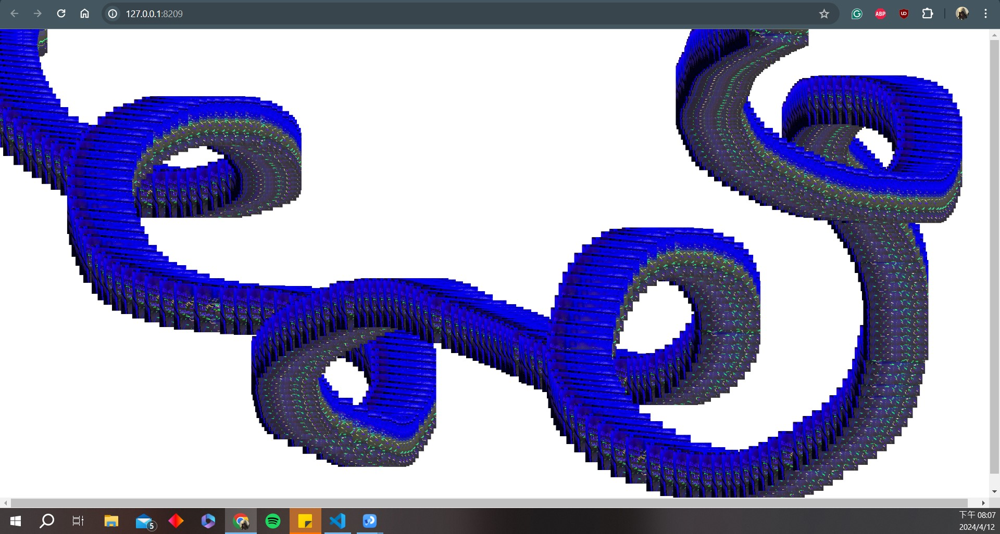
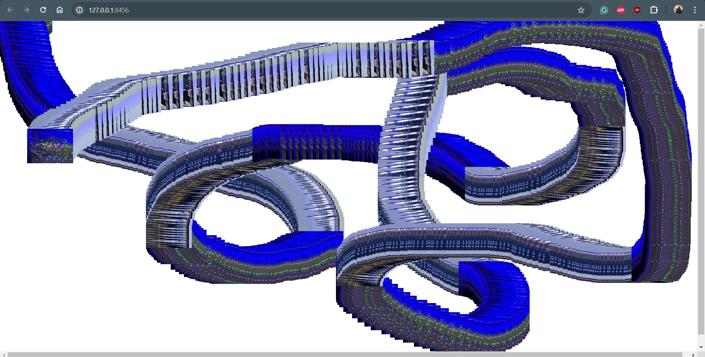
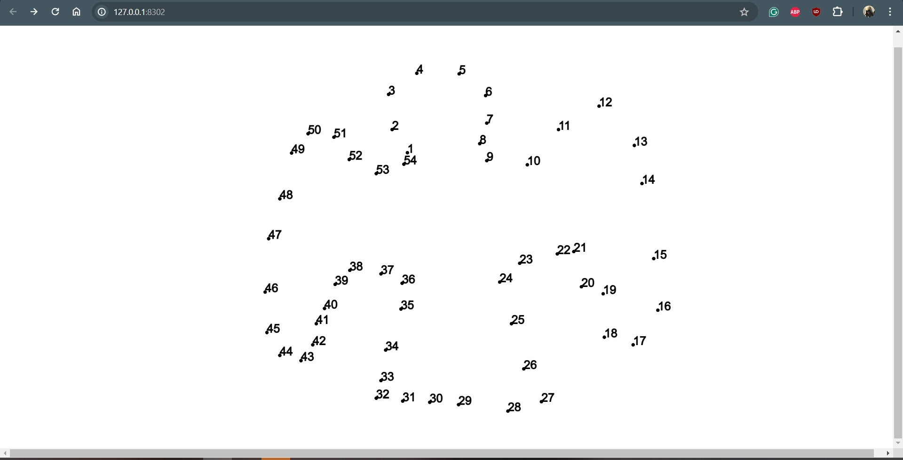
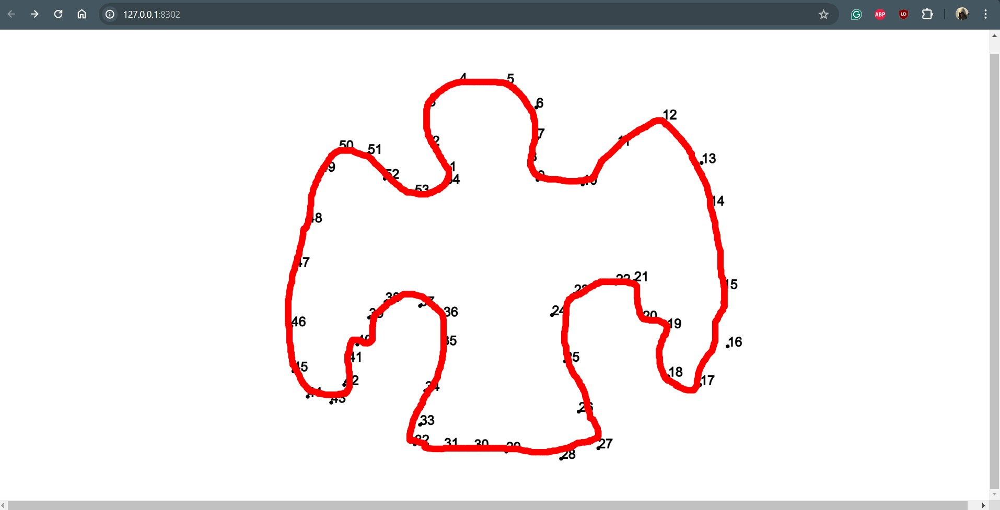

Week 5
Hunt n' Gather - examples of noteworthy creative coding works that engage with reflection | webcam | mirror
"PomPom Mirror" by Daniel Rozin
Daniel Rozin is known for his interactive mirror installations. This mirror uses PomPom to create a reflection of the viewer.
More Info
"Faces" by Arturo Castro
This project uses face detection and tracking algorithms to replace the faces in a live webcam feed with other faces sourced from images or videos. The result is a surreal and sometimes uncanny effect where the viewer's face is seamlessly replaced by faces from various sources.
More Info

"Open Garden" by Dale Hardiman and Stephen Royce
"Open Garden" is an interactive installation created by Dale Hardiman and Stephen Royce that invites participants to engage with a simulated natural environment through creative coding techniques and incorporating real-time data from sensors or webcams.
More Info
p5 creative coding during tutorial
This week in class we experiment with more creative coding techniques using p5.js and processing. My favorite among the things we tried are the picture trails one and the dot-linking one. I took a picture of my fish to make the a winding trail on the canvas. I also did an angel by linking the dots.
   